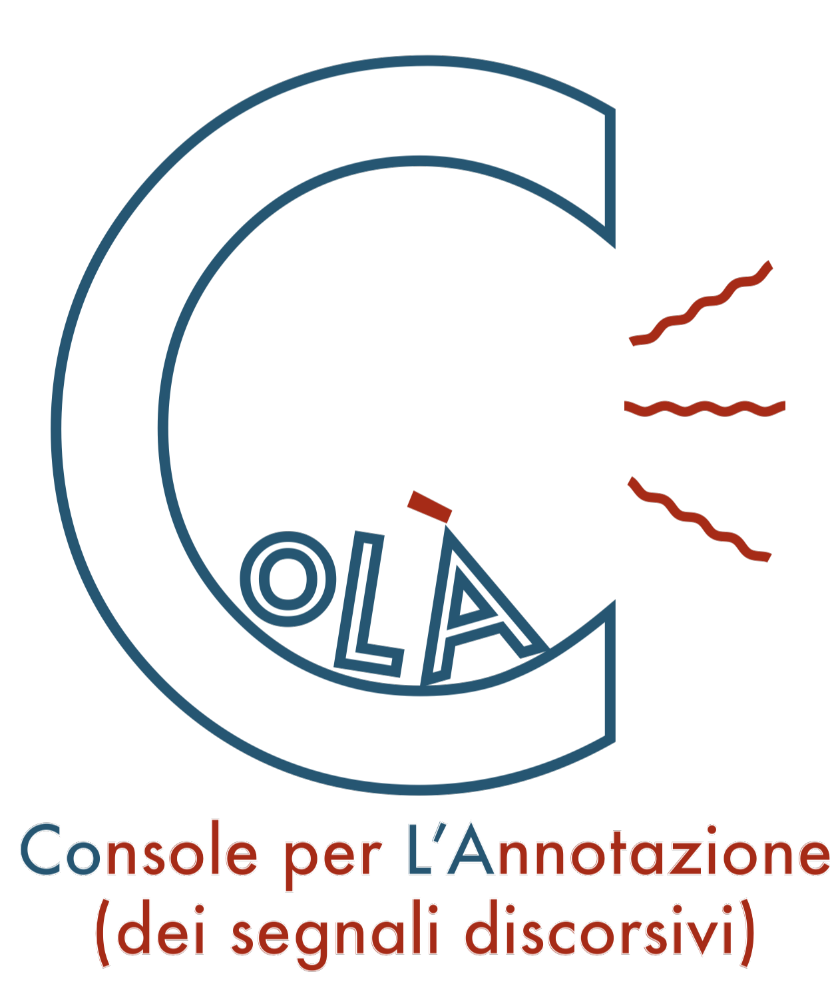

CoLÀ: Console per l’Annotazione dei segnali discorsivi
Annotazione · R (Shiny) · versione web e versione per WindowsApplicazione per l’annotazione manuale dei segnali discorsivi su concordanze KWIC, compatibile con le occorrenze esportate dal corpus KIParla. Per ogni occorrenza si stabilisce se si tratta di un segnale discorsivo e quali funzioni svolge, tra le 23 funzioni interazionali, metatestuali e cognitive dello schema del progetto COSÌ; si possono segnalare i cumuli e aggiungere commenti. Include un modulo per confrontare due annotazioni dello stesso file e calcolare l’accordo tra annotatori (IAA). Legge e salva file Excel e CSV.
Usa online · Scarica · Codice sorgente e guida